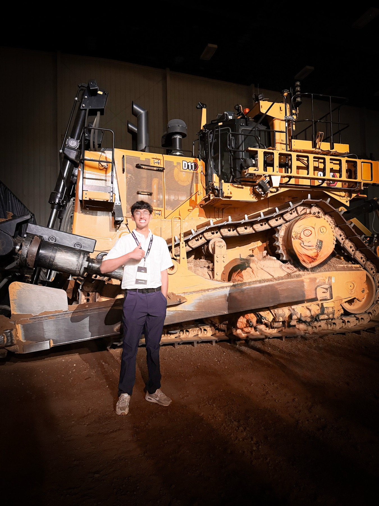
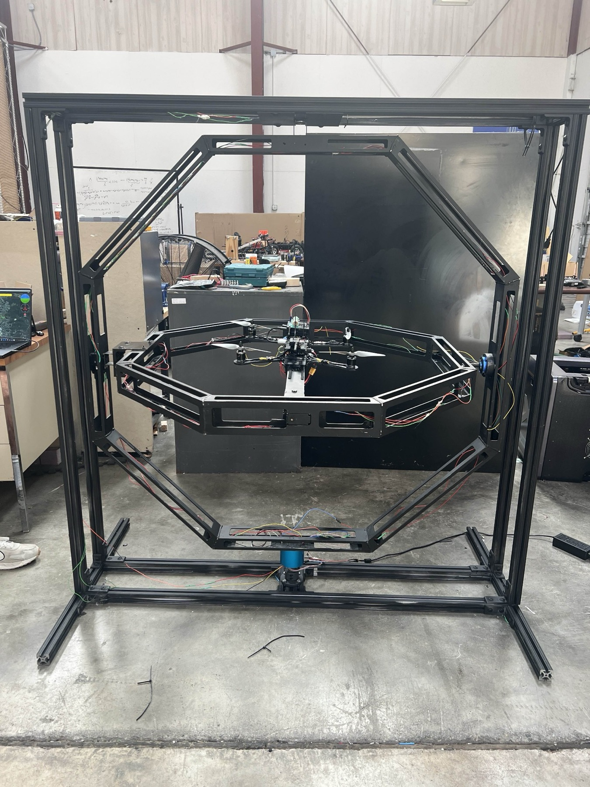
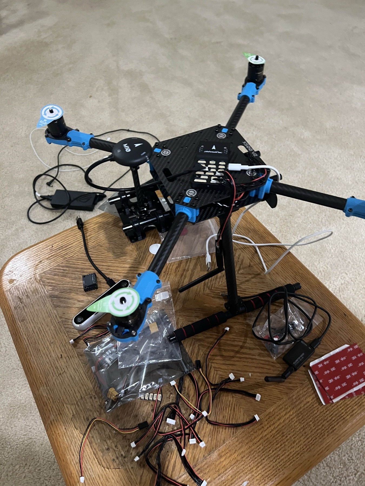
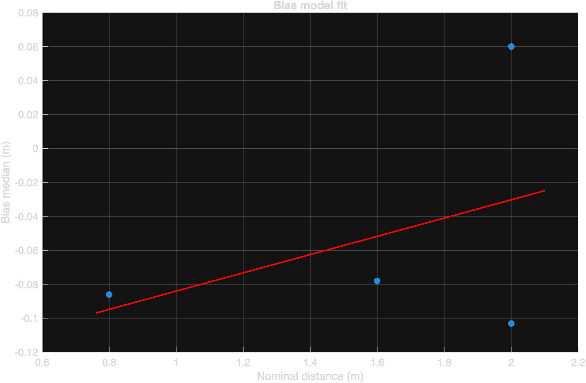

Caterpillar
Controls and simulation rotations
Model-based embedded controls, Dynasty plant testing, generated C feasibility checks, plus GTMS structural/thermal/CFD simulation work.
Read Caterpillar pageExperience
This page is a compact archive. The strongest recruiter-facing summaries are also on the home page.

Caterpillar
Model-based embedded controls, Dynasty plant testing, generated C feasibility checks, plus GTMS structural/thermal/CFD simulation work.
Read Caterpillar page
ACSL / NAVAIR
Undergraduate research with Dr. L'Afflitto on a NAVAIR-funded thrust stand, including ROS 2 + Dynamixel integration, Pixhawk/Odroid hardware, moment cancellation, MATLAB GA tuning workflows, and an AirTalent Symposium presentation.
Read thrust stand page
GoAERO / UAV autonomy
ROS 2 communication architecture, flight-stack interfaces, onboard compute planning, and simulation-to-flight validation.
Read GoAERO page
AVA Lab / NAVITI
Ranging logs, calibration, relative-pose geometry, and estimator-ready measurement modeling for GNSS-degraded navigation.
Read UWB page